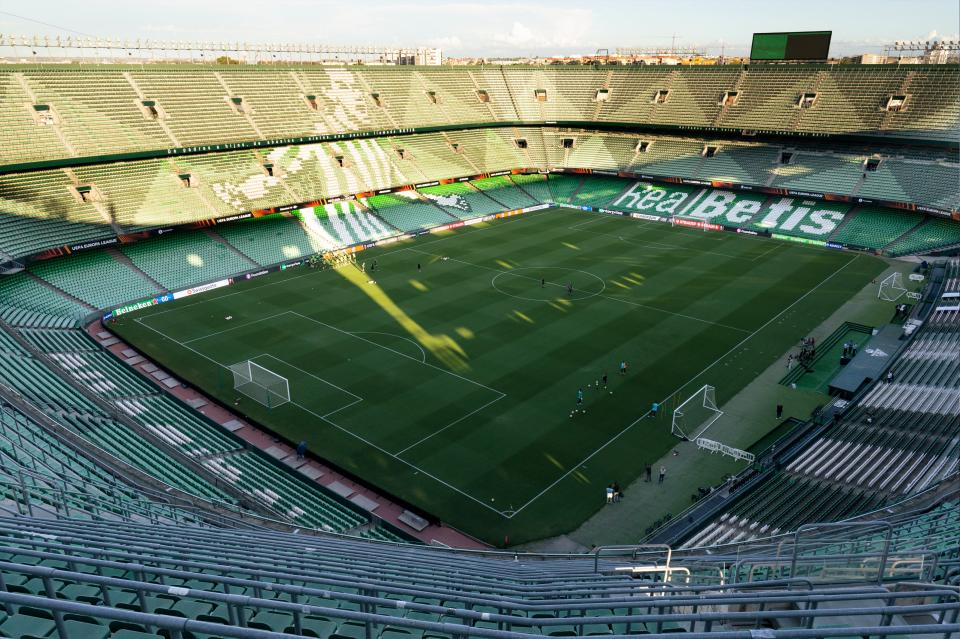

El Real Betis Balompié, también conocido como Real Betis o simplemente Betis, es una entidad polideportiva con sede en Sevilla (España). Se fundó en septiembre de 1907 para la práctica del fútbol, aunque sus orígenes datan de 1907 y así consta como fecha fundacional por el propio club, y oficialmente se registró el 1 de febrero de 1908.
PORTERO: Claudio Bravo
DEFENSA: Hector Bellerin Pezzella Marc Bartra Miranda
CENTROCAMPISTA: fekir Rodri Isco
DELANTERO: Ez Abde Borja Iglesias Aitor Rubial
1 CAMPEON DE ESPAÑA
2 CAMPEON DE LA COPA DEL REY
7 CAMPEON DE SEGUNDA DIVISION
